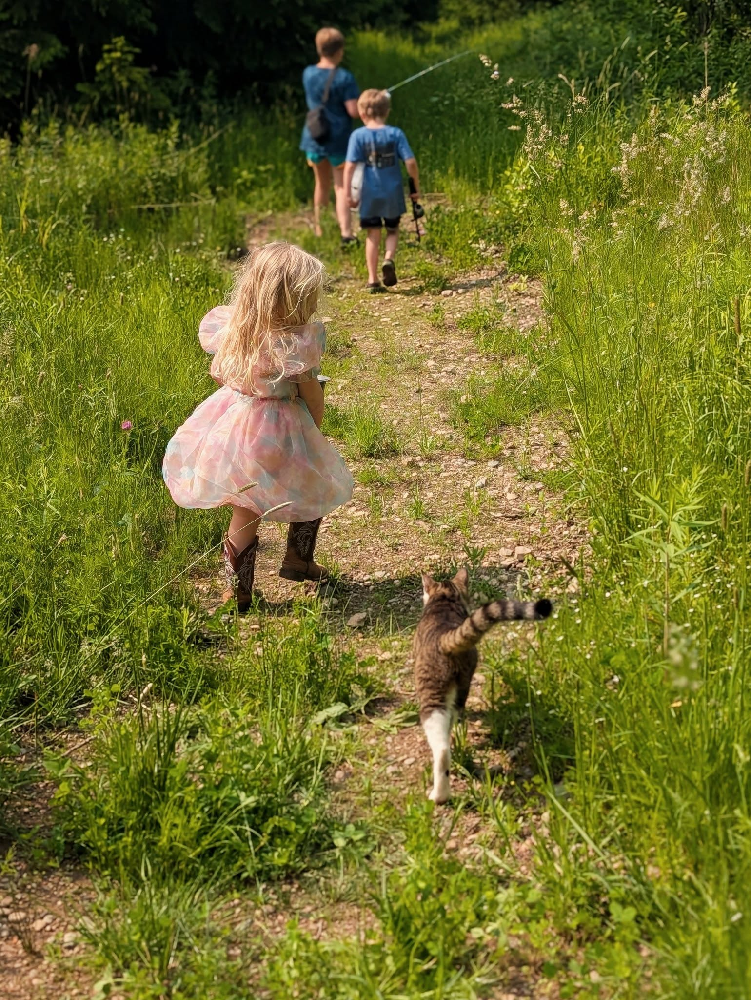
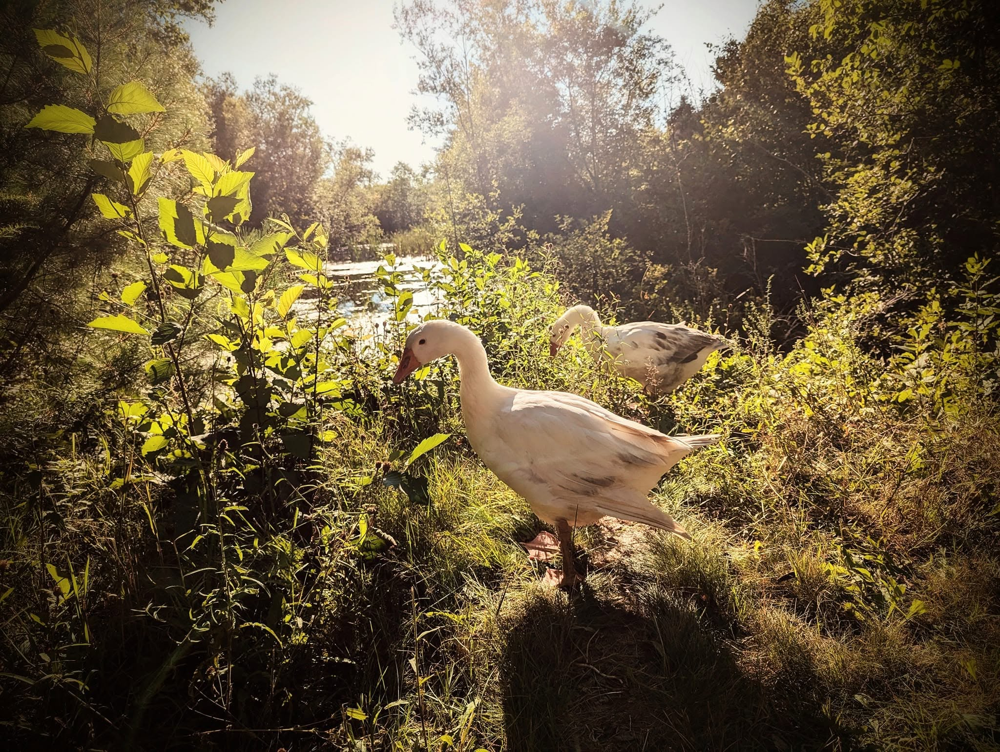
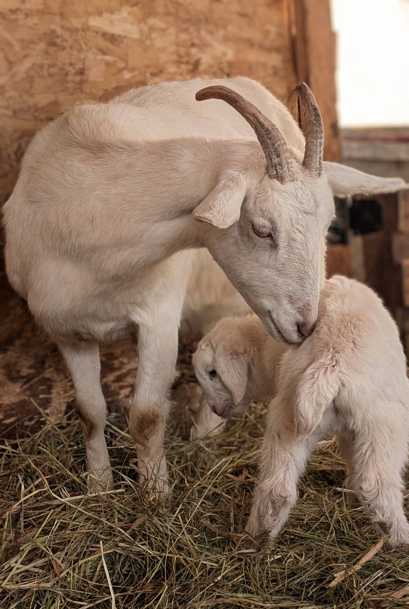

Farm & Homestead
Farm & Homestead
When we moved to Raven House, we had no farming background. What we had was a piece of land, a lot of curiosity, and kids who were genuinely excited about animals. That was enough to start.
The homestead has grown slowly and deliberately. Chickens first, then ducks, then goats. Cattle came later. A horse was already here. Each animal has taught us something we didn't know we needed to learn.
It is not a perfect operation. Things go sideways. Animals get sick. Fences fail. We figure it out, and the next year we know a little more than we did the year before.


Nigerian Dwarfs — small, loud, and relentlessly charming. We started with two and now have a herd. They produce milk, cause trouble, and follow the kids around the property like shadows.

A mixed flock that produces more eggs than we know what to do with most of the year. The chickens roost in the barn; the ducks patrol the yard. Both are opinionated.

A small beef herd that arrived more recently. They are calm, curious, and not nearly as easy to move as the goats. The calves, however, are something else entirely.

Was here when we arrived. Has become the property's steadiest presence — patient with the kids, particular about who gets near the grain, and almost certainly smarter than she lets on.

Seasonal residents. They arrive in spring, do an extraordinary job of clearing brush and turning ground, and leave in fall. We are always a little sad to see them go.

Barn cats who have decided they are house cats. They hunt, they supervise, and they join the kids on every walk through the property whether invited or not.


Our mixed flock produces a beautiful range of shell colours — cream, brown, and the occasional blue-green from the Ameraucanas. All pasture-raised, all washed, all refrigerated.
We sell locally. If you're in the Greenwood area and want to get on our egg list, reach out. We usually have more than enough to go around.
Get on the egg listKidding season. New calves. The first eggs after a slow winter. Mud everywhere. The pigs arrive. Everything happens at once and you don't sleep much.
Long days in the garden. Kids outside from morning until dark. The goats on the move. River walks. Learning circles on the picnic table. Peak egg production.
Harvest. The pigs leave. Preserving. The valley turns colour and the mornings get cold fast. Firewood. Preparing everything for what's coming.
Slower. The animals need more tending in the cold. The ravens are more visible against the snow. Good time to plan, make things, and remember why we moved here.



We're easy to reach. Drop us a line and we'll get back to you.